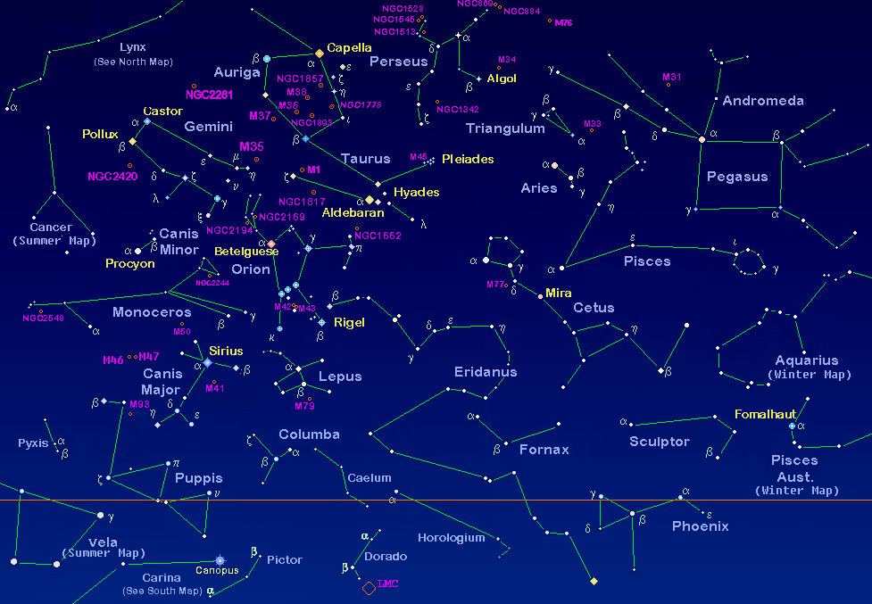

HOME
Space, when we think about it what do we see :
Our Galaxy
Black Holes
Planets
But belive, there is much more in the universe to explore.
Here is some informaton - Space is an almost perfect vacuum, nearly void of matter and with extremely low pressure. In space, sound doesn't carry because there aren't molecules close enough together to transmit sound between them. Not quite empty, bits of gas, dust and other matter floats around "emptier" areas of the universe, while more crowded regions can host planets, stars and galaxies.
From our Earth-bound perspective, outer space is most often thought to begin about 62 miles (100 kilometers) above sea level at what is known as the Kármán line. This is an imaginary boundary at an altitude where there is no appreciable air to breathe or scatter light. Passing this altitude, blue starts to give way to black because oxygen molecules are not in enough abundance to make the sky blue.No one knows exactly how big space is. It's difficult to determine because of what we can see in our detectors. We measure long distances in space in "light-years," representing the distance it takes for light to travel in a year (roughly 5.8 trillion miles (9.3 trillion kilometers)).
What are 'Constellations'?
There are a few different definitions of constellations, but many people think of constellations as a group of stars. Often, it's a group of stars that looks like a particular shape in the sky and has been given a name. These stars are far away from Earth. They are not connected to each other at all. Some stars in a constellation might be close while others are very far away. But, if you were to draw lines in the sky between the stars like a dot-to-dot puzzle and use lots of imagination the picture would look like an object, animal, or person.
Over time, cultures around the world have had different names and numbers of constellations depending on what people thought they saw. Today, there are 88 officially recognized constellations.
Here are some of them -
The AQUARIS

The OPHIUCHUS
The PISCES
And many more.
Here is some more informaton on constellations - constellation, in astronomy, any of certain groupings of stars that were imagined—at least by those who named them—to form conspicuous configurations of objects or creatures in the sky. Constellations are useful in assisting astronomers and navigators to locate certain stars.
From the earliest times the star groups known as constellations, the smaller groups (parts of constellations) known as asterisms, and also individual stars have received names connoting some meteorological phenomena or symbolizing religious or mythological beliefs. At one time it was held that the constellation names and myths were of Greek origin; this view has now been disproved, and an examination of the Hellenic myths associated with the stars and star groups in the light of the records revealed by the deciphering of Mesopotamian cuneiforms leads to the conclusion that in many, if not all, cases the Greek myth has a Mesopotamian parallel.

Star Constellation Chart
HABITABLE planets
like Earth
Did you know?
There are planets discovered like earth by scientists. these planets have the good atmosphere. there are some basic steps by which scientist recognize. these are -
The planet should have a host star and a perfect distance from the host star.
The planet should be at a particular distance from it's host star. the planet should be in the habitable zone.
The planet should have a good spin.
The planet should spin at a particular rate and same goes for the the planet's revolutaion.
It has to be a comfortable distance away from a star (Habitable Zone)
The stars around it have to be stable.
It should not have a very low mass.
It must rotate on its axis and revolve.
It should have a molten core.
It should hold an atmosphere.
The most HABITABLE planet discovered is -
Kepler-452b
Some others -
EARTH
Our Home
We all live on earth. Earth is our home planet and because of its perfect distance from sun we are alive on earth. But today no one knows how earth was created. Let us get informaton on
How Earth Was Created
Earth formed around 4.54 billion years ago, approximately one-third the age of the universe, by accretion from the solar nebula. Volcanic outgassing probably created the primordial atmosphere and then the ocean, but the early atmosphere contained almost no oxygen. Much of the Earth was molten because of frequent collisions with other bodies which led to extreme volcanism.
Earth
THE MOON
The Moon is Earth's only natural satellite. It is the fifth largest satellite in the Solar System and the largest and most massive relative to its parent planet,[f] with a diameter about one-quarter that of Earth (comparable to the width of Australia).[16] The Moon is a planetary-mass object with a differentiated rocky body, making it a satellite planet under the geophysical definitions of the term and larger than all known dwarf planets of the Solar System.[17] It lacks any significant atmosphere, hydrosphere, or magnetic field. Its surface gravity is about one-sixth of Earth's at 0.1654 g, with Jupiter's moon Io being the only satellite in the Solar System known to have a higher surface gravity and density. The Moon orbits Earth at an average distance of 384,400 km (238,900 mi), or about 30 times Earth's diameter. Its gravitational influence is the main driver of Earth's tides and very slowly lengthens Earth's day. The Moon's orbit around Earth has a sidereal period of 27.3 days. During each synodic period of 29.5 days, the amount of visible surface illuminated by the Sun varies from none up to 100%, resulting in lunar phases that form the basis for the months of a lunar calendar. The Moon is tidally locked to Earth, which means that the length of a full rotation of the Moon on its own axis causes its same side (the near side) to always face Earth, and the somewhat longer lunar day is the same as the synodic period. However, 59% of the total lunar surface can be seen from Earth through cyclical shifts in perspective known as libration. The most widely accepted origin explanation posits that the Moon formed 4.51 billion years ago, not long after Earth, out of the debris from a giant impact between the planet and a hypothesized Mars-sized body called Theia. It then receded to a wider orbit because of tidal interaction with the Earth. The near side of the Moon is marked by dark volcanic maria ("seas"), which fill the spaces between bright ancient crustal highlands and prominent impact craters. Most of the large impact basins and mare surfaces were in place by the end of the Imbrian period, some three billion years ago. The lunar surface is fairly non-reflective, with the reflectance of lunar soil being comparable to that of asphalt. However, due to its large angular diameter, the full moon is the brightest celestial object in the night sky. The Moon's apparent size is nearly the same as that of the Sun, allowing it to cover the Sun almost completely during a total solar eclipse.


THE SUN
Planets revolve around the sun due to its high mass and sun is made up of high temprture.The Sun is the star at the center of the Solar System. It is a nearly perfect ball of hot plasma,[18][19] heated to incandescence by nuclear fusion reactions in its core. The Sun radiates this energy mainly as light, ultraviolet, and infrared radiation, and is the most important source of energy for life on Earth. The Sun's radius is about 695,000 kilometers (432,000 miles), or 109 times that of Earth. Its mass is about 330,000 times that of Earth, comprising about 99.86% of the total mass of the Solar System.[20] Roughly three-quarters of the Sun's mass consists of hydrogen (~73%); the rest is mostly helium (~25%), with much smaller quantities of heavier elements, including oxygen, carbon, neon, and iron.[21] The Sun is a G-type main-sequence star (G2V). As such, it is informally, and not completely accurately, referred to as a yellow dwarf (its light is actually white). It formed approximately 4.6 billion[a][14][22] years ago from the gravitational collapse of matter within a region of a large molecular cloud. Most of this matter gathered in the center, whereas the rest flattened into an orbiting disk that became the Solar System. The central mass became so hot and dense that it eventually initiated nuclear fusion in its core. It is thought that almost all stars form by this process. Every second, the Sun's core fuses about 600 million tons of hydrogen into helium, and in the process converts 4 million tons of matter into energy. This energy, which can take between 10,000 and 170,000 years to escape the core, is the source of the Sun's light and heat. When hydrogen fusion in its core has diminished to the point at which the Sun is no longer in hydrostatic equilibrium, its core will undergo a marked increase in density and temperature while its outer layers expand, eventually transforming the Sun into a red giant. It is calculated that the Sun will become sufficiently large to engulf the current orbits of Mercury and Venus, and render Earth uninhabitable – but not for about five billion years. After this, it will shed its outer layers and become a dense type of cooling star known as a white dwarf, and no longer produce energy by fusion, but still glow and give off heat from its previous fusion. The enormous effect of the Sun on Earth has been recognized since prehistoric times. The Sun was thought of by some cultures as a deity. The synodic rotation of Earth and its orbit around the Sun are the basis of some solar calendars. The predominant calendar in use today is the Gregorian calendar which is based upon the standard 16th-century interpretation of the Sun's observed movement as actual movement
.jpeg)
SUPER HABITABLE PLANETS
Did You know?
There are planets more habitable than earth. A superhabitable planet is a hypothetical type of exoplanet or exomoon that may be better suited than Earth for the emergence and evolution of life. The concept was introduced in 2014 by René Heller and John Armstrong,[2] who have criticized the language used in the search for habitable planets and proposed clarifications. According to Heller and Armstrong, knowing whether or not a planet is in its host star's habitable zone (HZ) is insufficient to determine its habitability:[3] It is not clear why Earth should offer the most suitable physicochemical parameters to living organisms, as "planets could be non-Earth-like, yet offer more suitable conditions for the emergence and evolution of life than Earth did or does." While still assuming that life requires water, they hypothesize that Earth may not represent the optimal planetary habitability conditions for maximum biodiversity; in other words, they define a superhabitable world as a terrestrial planet or moon that could support more diverse flora and fauna than there are on Earth, as it would empirically show that its environment is more hospitable to life.
Two Earth-like planets have been identified, including one which may hold the conditions necessary for life to flourish. The two exoplanets, LP 890-9b and LP 890-9c, were detected 100 light-years away, orbiting the star LP 890-9 — and have since been dubbed “super-Earths” for their similarities to our home planet, though somewhat more massive. On these planets it will be like a sci - fi friction movie where you visit the super habitable planet and will be able to float. Scientists also think that on these planets a human shall have a much longer life span.

THE BLACK HOLES
As we all know that blak hole(s) are/is at the center of our Milky way galaxy. So let us have a breif note on black holes -
A black hole is a place in space where gravity pulls so much that even light can not get out. The gravity is so strong because matter has been squeezed into a tiny space. This can happen when a star is dying. Because no light can get out, people can't see black holes. They are invisible. Space telescopes with special tools can help find black holes. The special tools can see how stars that are very close to black holes act differently than other stars.
How big are BLACK HOLES ?
Black holes can be big or small. Scientists think the smallest black holes are as small as just one atom. These black holes are very tiny but have the mass of a large mountain. Mass is the amount of matter, or "stuff," in an object. Another kind of black hole is called "stellar." Its mass can be up to 20 times more than the mass of the sun. There may be many, many stellar mass black holes in Earth's galaxy. Earth's galaxy is called the Milky Way. The largest black holes are called "supermassive." These black holes have masses that are more than 1 million suns together. Scientists have found proof that every large galaxy contains a supermassive black hole at its center. The supermassive black hole at the center of the Milky Way galaxy is called Sagittarius A. It has a mass equal to about 4 million suns and would fit inside a very large ball that could hold a few million Earths.
How Do Black Holes Form?
Scientists think the smallest black holes formed when the universe began. Stellar black holes are made when the center of a very big star falls in upon itself, or collapses. When this happens, it causes a supernova. A supernova is an exploding star that blasts part of the star into space. Scientists think supermassive black holes were made at the same time as the galaxy they are in.
If Black Holes Are "Black," How Do Scientists Know They Are There?
A black hole can not be seen because strong gravity pulls all of the light into the middle of the black hole. But scientists can see how the strong gravity affects the stars and gas around the black hole. Scientists can study stars to find out if they are flying around, or orbiting, a black hole. When a black hole and a star are close together, high-energy light is made. This kind of light can not be seen with human eyes. Scientists use satellites and telescopes in space to see the high-energy light.
WORM HOLES
What are worm holes?
A wormhole (Einstein-Rosen bridge) is a hypothetical structure connecting disparate points in spacetime, and is based on a special solution of the Einstein field equations.[1] A wormhole can be visualized as a tunnel with two ends at separate points in spacetime (i.e., different locations, different points in time, or both). Wormholes are consistent with the general theory of relativity, but whether wormholes actually exist remains to be seen. Many scientists postulate that wormholes are merely projections of a fourth spatial dimension, analogous to how a two-dimensional (2D) being could experience only part of a three-dimensional (3D) object.[2] Theoretically, a wormhole might connect extremely long distances such as a billion light years, or short distances such as a few meters, or different points in time, or even different universes.[3] In 1995, Matt Visser suggested there may be many wormholes in the universe if cosmic strings with negative mass were generated in the early universe.[4][5] Some physicists, such as Kip Thorne, have suggested how to make wormholes artificially.[6]
For a simplified notion of a wormhole, space can be visualized as a two-dimensional surface. In this case, a wormhole would appear as a hole in that surface, lead into a 3D tube (the inside surface of a cylinder), then re-emerge at another location on the 2D surface with a hole similar to the entrance. An actual wormhole would be analogous to this, but with the spatial dimensions raised by one. For example, instead of circular holes on a 2D plane, the entry and exit points could be visualized as spherical holes in 3D space leading into a four-dimensional "tube" similar to a spherinder. Another way to imagine wormholes is to take a sheet of paper and draw two somewhat distant points on one side of the paper. The sheet of paper represents a plane in the spacetime continuum, and the two points represent a distance to be traveled, but theoretically a wormhole could connect these two points by folding that plane (i.e. the paper) so the points are touching. In this way it would be much easier to traverse the distance since the two points are now touching.
GALAXY(S)
A galaxy is a system of stars, stellar remnants, interstellar gas, dust, dark matter, bound together by gravity.[1][2] The word is derived from the Greek galaxias (γαλαξίας), literally 'milky', a reference to the Milky Way galaxy that contains the Solar System. Galaxies, averaging an estimated 100 million stars,[3] range in size from dwarfs with less than a hundred million stars, to the largest galaxies known – supergiants with one hundred trillion stars,[4] each orbiting its galaxy's center of mass. Most of the mass in a typical galaxy is in the form of dark matter, with only a few percent of that mass visible in the form of stars and nebulae. Supermassive black holes are a common feature at the centres of galaxies. Galaxies are categorized according to their visual morphology as elliptical,[5] spiral, or irregular.[6] Many are thought to have supermassive black holes at their centers. The Milky Way's central black hole, known as Sagittarius A*, has a mass four million times greater than the Sun.[7] As of March 2016, GN-z11 is the oldest and most distant galaxy observed. It has a comoving distance of 32 billion light-years from Earth, and is seen as it existed just 400 million years after the Big Bang. In 2016, using 20 years of images from the Hubble space telescope, it was estimated that there were in total two trillion (2×1012)[8] or more[9][10] galaxies in the observable universe, and as many as an estimated 1×1024 stars[11][12] (more stars than all the grains of sand on all beaches of the planet Earth).[13] In 2021, data from NASA's New Horizons space probe was used to revise the earlier estimate to roughly 200 billion galaxies (2×1011),[14] Most galaxies are 1,000 to 100,000 parsecs in diameter (approximately 3,000 to 300,000 light years) and are separated by distances on the order of millions of parsecs (or megaparsecs). For comparison, the Milky Way has a diameter of at least 26,800 parsecs (87,400 ly) and is separated from the Andromeda Galaxy (with diameter of about 152,000 ly), its nearest large neighbor, by 780,000 parsecs (2.5 million ly.) The space between galaxies is filled with a tenuous gas (the intergalactic medium) with an average density of less than one atom per cubic meter. Most galaxies are gravitationally organized into groups, clusters and superclusters. The Milky Way is part of the Local Group, which it dominates along with Andromeda Galaxy. The group is part of the Virgo Supercluster. At the largest scale, these associations are generally arranged into sheets and filaments surrounded by immense voids.[15] Both the Local Group and the Virgo Supercluster are contained in a much larger cosmic structure named Laniakea.
some beautyfull galaxies -
MILKY WAY GALAXY
.jpeg)
Andromeda galaxy
.jpeg)
OUR UNIVERSE
We all know that the universe is made up of galaxies, galaxies are made up of planets, stars and many celestrial objects. But what i our universe really. Let us try to understand by this breif note.
The universe is all of space and time[a] and their contents,[10] including planets, stars, galaxies, and all other forms of matter and energy. The Big Bang theory is the prevailing cosmological description of the development of the universe. According to this theory, space and time emerged together 13.787±0.020 billion years ago,[11] and the universe has been expanding ever since the Big Bang. While the spatial size of the entire universe is unknown,[3] it is possible to measure the size of the observable universe, which is approximately 93 billion light-years in diameter at the present day. Some of the earliest cosmological models of the universe were developed by ancient Greek and Indian philosophers and were geocentric, placing Earth at the center.[12][13] Over the centuries, more precise astronomical observations led Nicolaus Copernicus to develop the heliocentric model with the Sun at the center of the Solar System. In developing the law of universal gravitation, Isaac Newton built upon Copernicus's work as well as Johannes Kepler's laws of planetary motion and observations by Tycho Brahe. Further observational improvements led to the realization that the Sun is one of a few hundred billion stars in the Milky Way, which is one of a few hundred billion galaxies in the observable universe. Many of the stars in a galaxy have planets. At the largest scale, galaxies are distributed uniformly and the same in all directions, meaning that the universe has neither an edge nor a center. At smaller scales, galaxies are distributed in clusters and superclusters which form immense filaments and voids in space, creating a vast foam-like structure.[14] Discoveries in the early 20th century have suggested that the universe had a beginning and that space has been expanding since then[15] at an increasing rate.[16] According to the Big Bang theory, the energy and matter initially present have become less dense as the universe expanded. After an initial accelerated expansion called the inflationary epoch at around 10−32 seconds, and the separation of the four known fundamental forces, the universe gradually cooled and continued to expand, allowing the first subatomic particles and simple atoms to form. Dark matter gradually gathered, forming a foam-like structure of filaments and voids under the influence of gravity. Giant clouds of hydrogen and helium were gradually drawn to the places where dark matter was most dense, forming the first galaxies, stars, and everything else seen today. From studying the movement of galaxies, it has been discovered that the universe contains much more matter than is accounted for by visible objects; stars, galaxies, nebulas and interstellar gas. This unseen matter is known as dark matter[17] (dark means that there is a wide range of strong indirect evidence that it exists, but we have not yet detected it directly). The ΛCDM model is the most widely accepted model of the universe. It suggests that about 69.2%±1.2% of the mass and energy in the universe is dark energy which is responsible for the acceleration of the expansion of space, and about 25.8%±1.1% is dark matter.[18] Ordinary ('baryonic') matter is therefore only 4.84%±0.1% of the physical universe.[18] Stars, planets, and visible gas clouds only form about 6% of the ordinary matter.[19] There are many competing hypotheses about the ultimate fate of the universe and about what, if anything, preceded the Big Bang, while other physicists and philosophers refuse to speculate, doubting that information about prior states will ever be accessible. Some physicists have suggested various multiverse hypotheses, in which our universe might be one among many universes that likewise exist.
INTRESTING STORIES
of the space
Story Of Kalpana Chawla
First women to go to space
Kalpana Chawla was the first Indian-American astronaut to go to space. She flew on the Space Shuttle Columbia in 1997 to cross horizons and fly into the space. Her life is an inspiration to women all over the globe. She was just an ordinary girl, who, with her extraordinary courage and work, became a source of encouragement to women all over the world to follow their dreams and work hard to succeed
Kalpana was born on 17th March, 1962, in a small town of Karnal in Haryana. She was born to an average Indian middle class family.She grew up in a typical male dominant society, where boys were given all the freedom and girls weren’t even allowed to work. Her mother was quite supportive and liberal, and she encouraged Kalpana to do something great. She did her schooling at Tagore Baal Niketan School in Karnal. She completed her B.Tech in Aeronautical Engineering from Punjab Engineering College, Chandigarh in 1982. She obtained an Msc. degree Aerospace Engineering from the University of Texas at Arlington. She wanted to get into NASA. She went on to get a second degree in 1986, and a PhD in Aerospace Engineering in 1988. In 1998 she began workinh with NASA Ames Research Center.
In 1983, Kalpna got married to Jean-Parrie Harrison, who was a flying instructor and an aviation author. They led a happily married life, while she started working hard to become an astronaut. Soon, she got promoted to the position of Vice President of Overset Methods, Inc at NASA Research Center. There, she made a Computational fluid dynamics (CFD) research on Vertical/Short Takeoff and Landing concepts. She gained certification for a pilot license for the seaplanes, multi engine air place and glider. She also was a Certificated Flight Instructor for glider and airplanes.

Her first Space mission began on November 19, 1997, as she flew with six other astronauts to space on Space Shuttle Columbia flight STS-87. She became the first Indian born woman to fly in Space, and the second Indian to be in Space after Rakesh Sharma. Chawla traveled over 10.4 million miles in 252 orbits of the earth, logging more than 372 hours in space. After returning, she received many awards such as Congressional Space Medal of Honor NASA Space Flight Medal and NASA Distinguished Service Medal.
Her second SPace mission started on 16th January 2003. She flew on Space Shuttle Columbia flight STS-107. While the shuttle was returning back to Earth, it malfunctioned and disintegrated, which caused the death of Kalpana, along with six other crew members. This tragic incident occurred on 1st February 2003. Though the first female astronaut from India died on that fateful day, she will always be remembered from her courage and hard work.
A Failed Misson
of the space
The crew of Soyuz 11 were killed after undocking from space station Salyut 1 after a three-week stay. A cabin vent valve construction defect caused it to open at service module separation. The recovery team found the crew dead. These three are, as of 2023, the only human fatalities in space (above 100 kilometers (330,000 ft)).
The Soyuz 11 landing coordinates are 47.35663°N 70.12142°E, 90 kilometers (56 mi) southwest of Karazhal, Karagandy, Kazakhstan, and about 550 kilometers (340 mi) northeast of Baikonur, in open flat country far from any populated area. In a small circular fenced area at the site is a memorial monument in the form of a three-sided metallic column. Near the top of the column on each side is the engraved image of the face of a crew member set into a stylized triangle
INTRESTING GAMES
About space
One of the intresting games of space is the 'DARK ORBIT REALODED'.